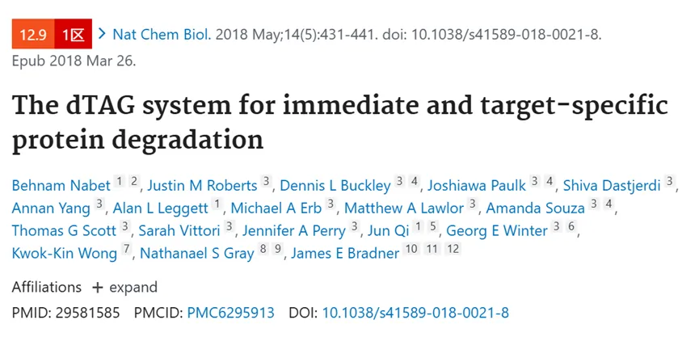
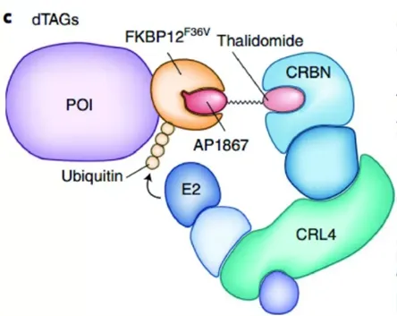
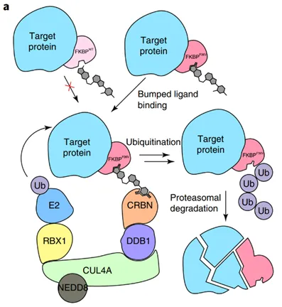
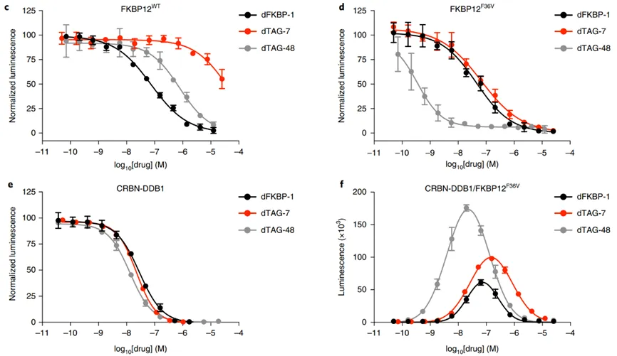
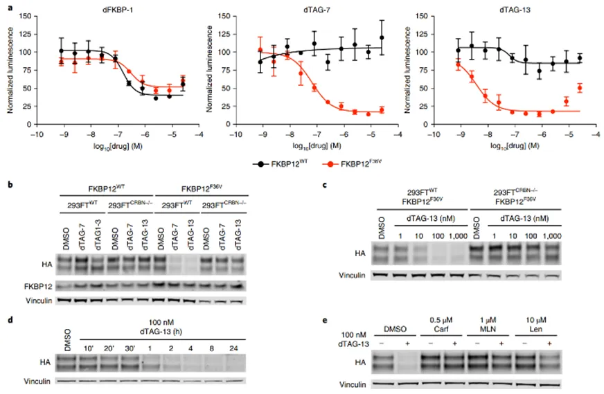
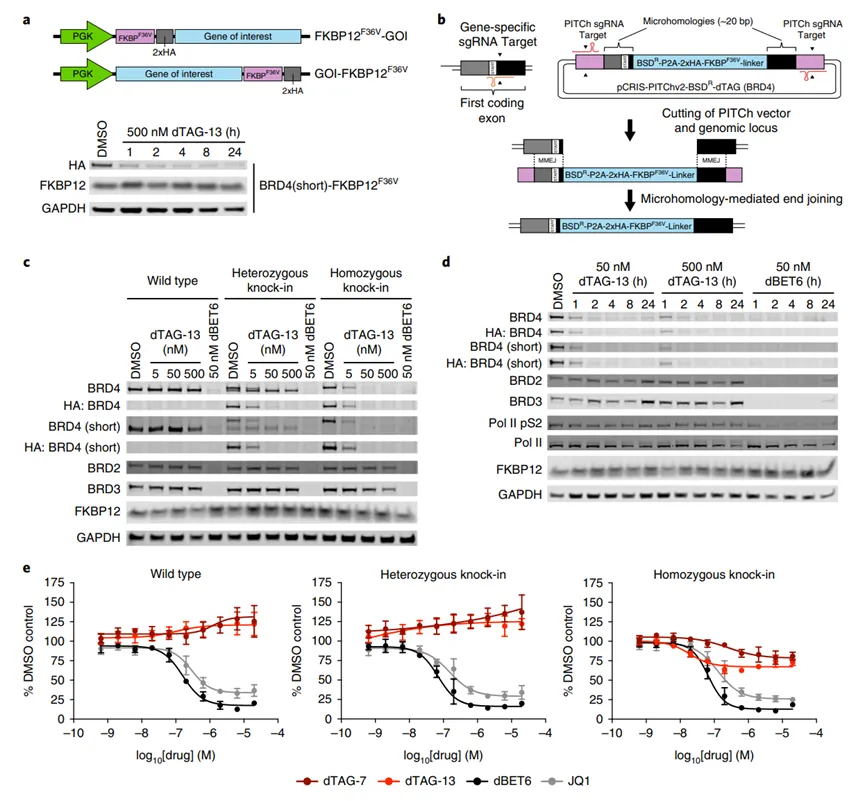
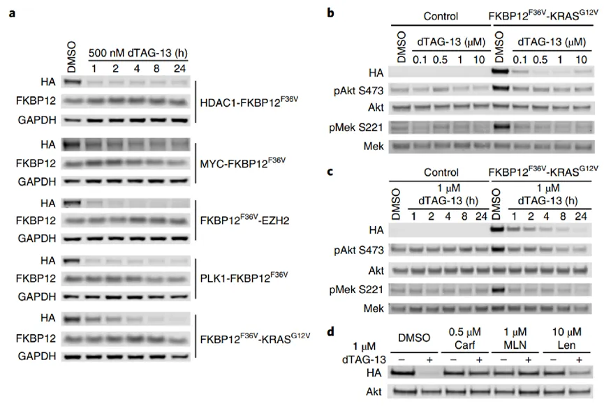
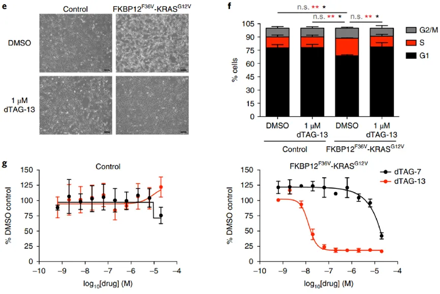
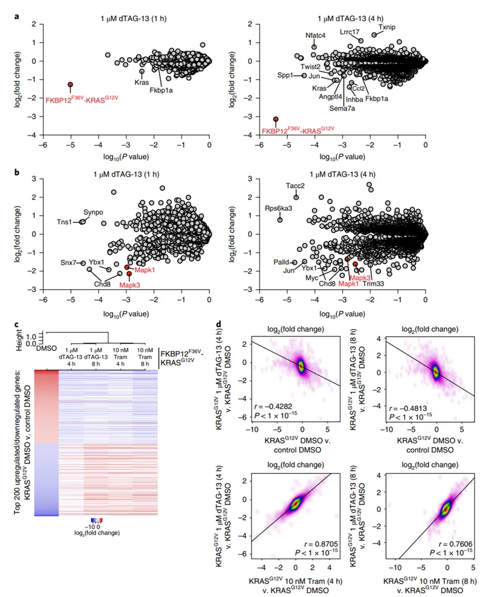
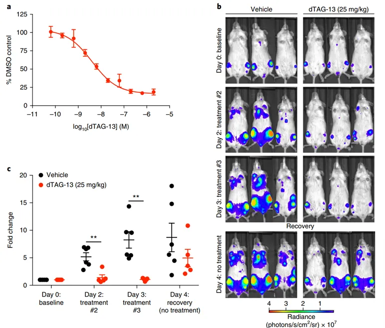

瞬时降解的"Protein i"技术：degradation tag系统
原文：https://mp.weixin.qq.com/s?__biz=MzAwMzIzOTk5OQ==&mid=2247528839&idx=1&sn=3424aec80f202a71713a3a6879f8bd6a&chksm=9b3c08d7ac4b81c192d10b6bf380cf625f9e0409418dc7b63043cce8fa1682478c0d597e83f9#rd 合集：文献速递
一、写在前面
未来我们会在线上线下不断分享实验技能，感兴趣的同学可见：常态化实验学习

*实验中我们常用RNA 干扰和CRISPR-cas9技术来进行目的蛋白表达减少或增加的干预，然而这些方法对于蛋白表达的影响是缓慢的，其在评估细胞生长和存活相关蛋白质的瞬时变化上存在明显的不足，无法在表型受损之前直接观察蛋白质缺失或过表达带来的影响。因此需要开发一种新的方法对内源蛋白实现瞬时降解。dTAG就很好的解决了这个问题，感兴趣的同学可以看一下原文： Nabet B, Roberts JM, Buckley DL, Paulk J, Dastjerdi S, Yang A, Leggett AL, Erb MA, Lawlor MA, Souza A, Scott TG, Vittori S, Perry JA, Qi J, Winter GE, Wong KK, Gray NS, Bradner JE. The dTAG system for immediate and target-specific protein degradation. Nat Chem Biol. 2018 May;14(5):431-441. 研究表明，小分子的干预适用于对瞬时反应做出评估 ，内源性蛋白降解的常见方式是泛素 -蛋白酶体途径*，需要降解的蛋白质被带到E3泛素连接酶后被泛素化修饰，随后被蛋白酶体降解。因此出现了一种化学方法被称为PROTAC技术，通常需要一种配体（即降解剂）与目的蛋白和E3泛素连接酶进行连接从而实现对于蛋白质的降解，但这种方法需要预先确定目的蛋白的配体。后续研究中，科学家发现了一种被称为dFBKP-1的配体，其包含的SLF和thalidomide能够分别连接FKBP12和CRBN（E3泛素酶的组分），因此一种新的基于tag（标签）或degron（降解决定因子）的降解系统被建立，分别使用FKBP12和dFKBP-1作为降解决定因子和降解配体。但是仍存在问题，dFKBP-1会诱导内源性FKBP12的降解，产生复杂的生物学效应，因此 Nabet等人将dFKBP-1中的SLF进行修饰产生AP1867，其特异性结合突变体FKBP12F36V而非WT的FKBP12。AP1867和thalidomide之间通过连接子进行连接，被称为dTAGs。

如果需要数据分析指导 、生信热点全文复现 、自测数据个性化分析 辅导，欢迎联系客服微信[Biomamba_zhushou]二、dTAG的特点
1 ：dTAG系统能够连接CRBN和FKBP12F36V
这篇文章中，作者将CRBN 配体与AP1867 或其他AP1867类型进行连接，产生了dTAG-7，dTAG-13，dTAG-48和dTAG-51（Fig.1b）。之后为评估这些小分子的选择性，利用AlphaScreen 方法进行邻位测定，检测dTAGs分子通过bio-SLF或bio-CRBN与FKBP12WT和FKBP12F36V的结合能力，结果发现蛋白的luminescence产生剂量依赖的降低，其中dTAG7 、13与FKBP12F36V有较好的结合活性（Fig.1c-e）。在此基础上，为进一步验证，作者进行了CRBN-DDB1/FKBP12F36V dimerization assay，dFKBP和所有dTAGs的添加都展现出明显剂量依赖的luminescence增加，同时存在‘hook effect’，当浓度过高时，luminescence减少（Fig.1f）。****

2 ：dTAG7和13能够实现细胞内的靶向降解
进一步验证293FT细胞中FKBP12WT和FKBP12F36V的降解效应，作者进行了双荧光素酶实验，Nluc:Fluc的比例显示FKBP12融合蛋白的降解程度，结果显示dTAG-7和 dTAG-13能够作用于FKBP12F36V而非FKBP12WT（Fig.2a）。为验证dTAG-7和 dTAG-13对于CRBN依赖的选择性，作者构建293FT（CRBN−/−) 细胞，结果显示100nm的dTAG-7和 dTAG-13能够作用于293FT而非293FT（CRBN−/−)细胞（Fig.2b,c），且dTAG-7和 dTAG-13的处理没有改变FKBP12WT和FKBP12F36V-Nlu的水平。时间分析显示，dTAG-13处理可导致293FTWT细胞中FKBP12F36V-Nluc在处理后1h快速降解（Fig.2d）。为了证实靶蛋白的有效降解对于CRBN结合、E3复合物激活和蛋白酶体功能的要求，作者将细胞分别与Carf (蛋白酶体抑制剂)，MLN (Nedd8活化酶抑制剂)或Len (CRBN结合剂)，结果显示每种抑制剂都能够抑制蛋白降解，证实了以上三种功能对于dTAG发挥作用都是必不可少的（Fig.2e）。

3 ：CRISPR介导的Knock-in细胞系中BRD4降解
在上述研究的基础上，作者进行了CRISPR介导的Knock-in细胞系的验证，进行BRD4蛋白的降解。首先在pLEX_305 慢病毒载体中插入FKBP12F36V，并添加HA标签和puromycin筛选标记，验证外源性蛋白降解的可行性，添加dTAGs后，HA表达明显减少（Fig.3a）。**接下来，使用 PITCh系统经MMEJ实现选择性的Knock-in,克隆BRD4的sgRNA进入pX330A PITCh 载体，同时在pCRIS-PITChv2载体的基础上，使用BSD,P2A,HA和FKBP12F36V代替EGFP-2A-Puro构建donor质粒（Fig.3b）。**在293FT细胞中进行纯合和杂合克隆敲入的筛选，并添加dTAGs进行蛋白表型的鉴定，结果显示FKBP12F36V敲入纯合和杂合中均有明显的BRD4的降低，而BRD2和3表达不变（Fig.3c,d）,dBET6的使用能够导致转录相关Pol II pS2和BRD2,3,4的减少，而dTAG的使用具有明显的选择性。且dTAG7和13的使用相比于dBET6和JQ1对细胞增殖的影响更小（Fig.3e）。

4 ：细胞信号通路相关KRASG12V的瞬时降解
为验证dTAG对于细胞瞬时反应的应用性，作者选择RAS蛋白进行验证，RAS通常与细胞增殖，存活，迁移和分化相关，对于RAS的靶向降解有可能为RAS相关的治疗靶点开发新的思路。构建带有不同标签的融合蛋白，dTAG13的使用均能够导致靶蛋白的降解，但降解效率有所差异（Fig.4a）。之后在NIH-3T3细胞中稳定插入FKBP12F36V-KRASG12V，KRAS的敲入明显增加了pMEK和pAKT的表达；dTAG7和13的使用，导致KARS表达降低，伴随着功能性pMEK和pAKT表达明显减少（Fig.4b,c），作者使用1uM dTAG13进行功能性验证，使用Carf,MLN和Len预处理之后，dTAG13导致的HA减少被破坏（Fig.4d）。癌蛋白减少后，也观察到明显的功能变化，包括形态变化和抗增殖能力（Fig.4e,f,g）。


5 ：KRASG12V的瞬时降解引起快速的转录变化
之后，作者进行了蛋白组学和磷酸化蛋白组学 来评估FKBP12F36V-KRASG12V降解的特异性。结果显示KRAS蛋白水平的明显降低和KRAS功能相关P-Erk1和3的降低（Fig.5a,b）。证实了KRAS蛋白降解的高度选择性（Fig.5c）,且KRAS蛋白降解引起的转录变化与MEK1/2抑制剂trametinib的使用引起的高度一致（Fig.5d）。

6 ：dTAG系统在体内引起蛋白快速有效的降解。
为测试dTAG系统是否可用于控制小鼠体内的蛋白质表达 ，作者将表达与FKBP12F36V融合的萤光素酶报告基因（luc-FKBP12F36V）的人白血病MV4-11细胞移植到小鼠骨髓中。通过dTAG13处理，报告基因的表达在4小时内迅速减少，随后在28小时恢复报告信号。表明dTAG系统可以快速和可逆地评估活体内靶蛋白的功能。

总结讨论
这篇文章开发了一种用于即时蛋白选择性降解的新技术，无论是原理还是验证都描述的非常详细，总的来说，dTAG调控靶蛋白丰度展示出快速、可逆和可调节 的特点，能对细胞总蛋白丰度提供快速的剂量依赖性效应、精确的时间控制 ，而且这种效应在去除dTAG后是可逆 的，避免了使用RNA干扰和CRIPSPR技术产生的时间滞后和蛋白不可逆的问题；其次dTAG的使用无需转入表达载体也不会产生抑制剂耐药性的问题 ，在后续实验中可以应用于我们感兴趣蛋白的瞬时降解 ，原则上可降解任意蛋白 ，扩展现有药物靶点的可成药空间并且可调节传统小分子药物难以调控的蛋白 ，为实验设计和功能验证提供了新思路。

如何联系我们

 留一个领取资料、免费两周学习版服务器的微信号[Biomamba_zhushou]，方便各位随时交流。同时我们也构建了交流群矩阵，欢迎大家入群讨论。
大家可以阅读完这几篇之后添加给生信入门初学者的小贴士
如何搜索公众号过往发布内容
留一个领取资料、免费两周学习版服务器的微信号[Biomamba_zhushou]，方便各位随时交流。同时我们也构建了交流群矩阵，欢迎大家入群讨论。
大家可以阅读完这几篇之后添加给生信入门初学者的小贴士
如何搜索公众号过往发布内容
已有生信基地联系方式的同学无需重复添加

 您点的每个赞和在看，我都认真当成了喜欢
您点的每个赞和在看，我都认真当成了喜欢